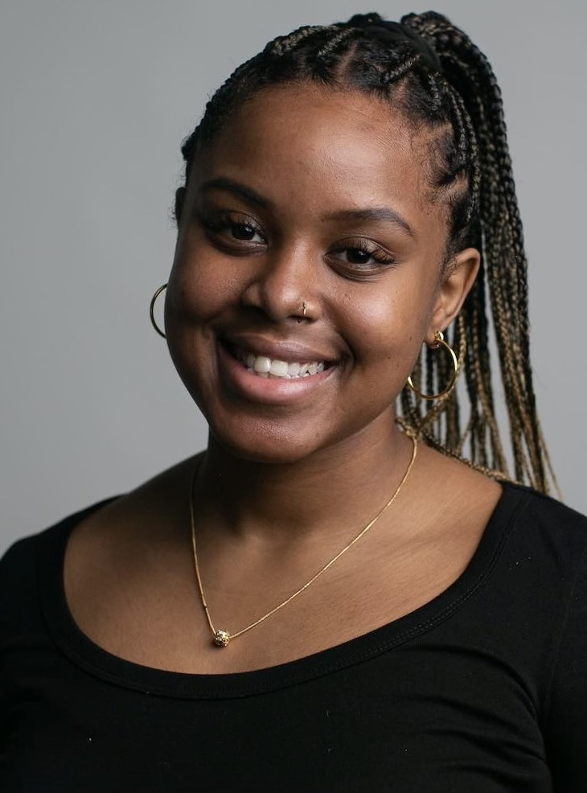

Harlem is What I Am Repping.
As a software engineer (FSW), I love having the opportunity to create and build new worlds for my community and myself. My participation in Pursuit, an intensive 12-month, software engineering fellowship with a 9% acceptance rate, has given me the experience to hone my skills in Javascript, HTML, CSS, Node, Express, React.js, Redux.js, PostgreSQL, APIs, sprints, pair programming, and code reviews, Git and Github.
I am pursuing software engineering because it gives me the opportunity to innovate and create in ways that can have positive impact. As a Black Latina woman born and raised in Harlem, learning how to use technology to create, innovate, and grow is a freeing and empowering experience.
I get inspired every time I am exposed to new experiences and ideas, knowing that like my mother, I can get things done. I would love to push the world to be bigger and think bigger. I feel this comes with limiting ignorance, and increasing exposure to inspire community and creation. Using my abilities to solve problems as well as gauging the strengths of people and situations, I aim to listen before I speak and allow space for others because I want to absorb and learn from people I interact with.
Learning and advancement are my passions, outside of coding I like to create artistically and observe the world through the eyes of astrology.